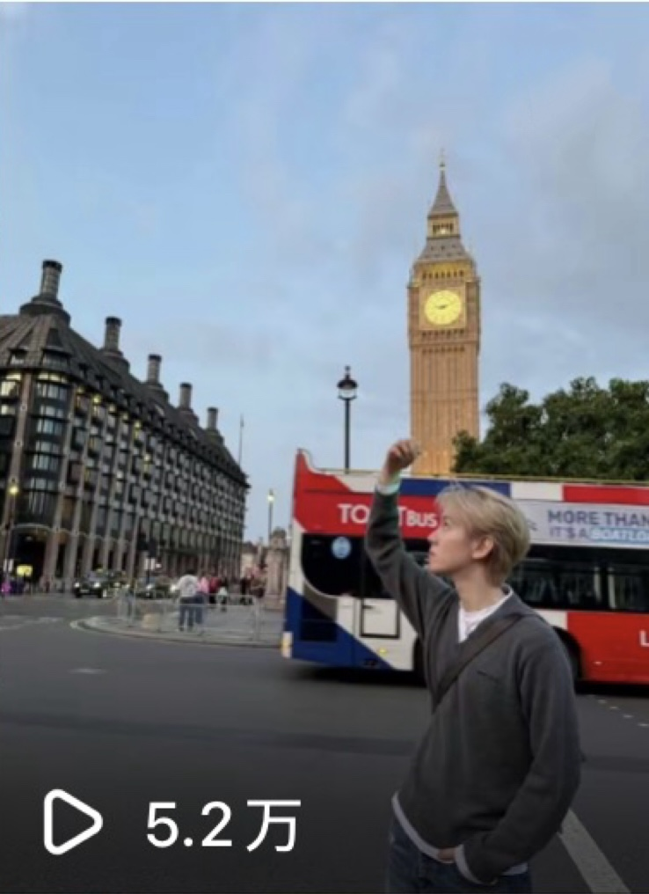
01
播放52K
点赞2,712
NEW MEDIA
CREATIVE
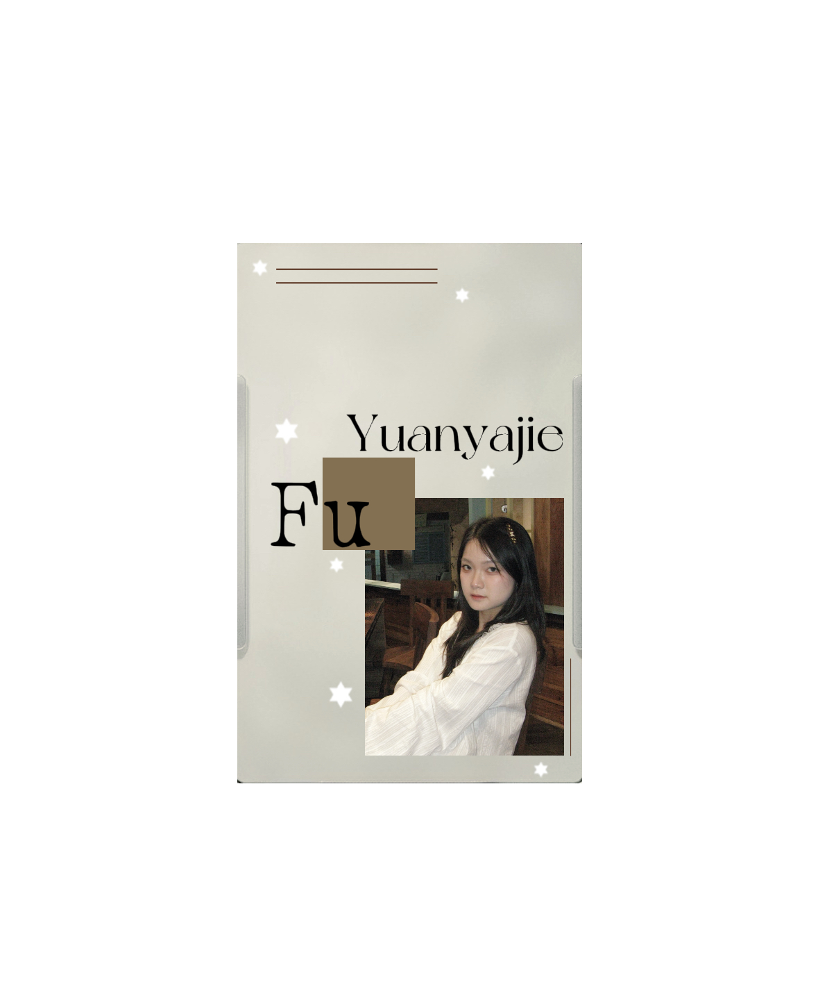
↘ drag the badge
to say hello
SELECTED WORK
2024—2026
02 / PROJECTS
关于镜头、节奏与叙事的影像实践。
以动态影像作为叙事媒介，记录从创意、拍摄到剪辑与视觉表达的完整实践。
PERFORMANCE SNAPSHOT

01
播放52K
点赞2,712
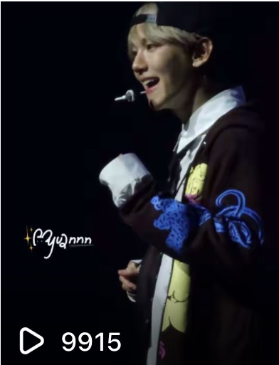
02
播放9,915
点赞1,462
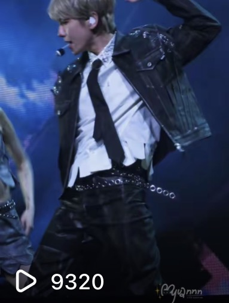
03
播放9,320
点赞1,750
04
播放8,625
点赞1,446
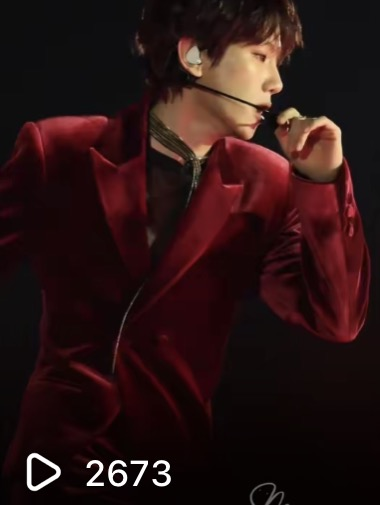
05
播放2,673
点赞492
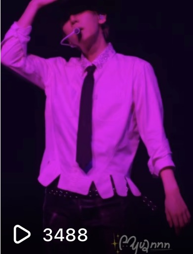
06
播放3,488
点赞385
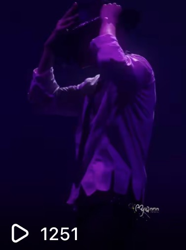
07
播放1,251
点赞233
02 / PROJECTS
关于构图、质感与静态叙事的图像实践。
以舞台瞬间捕捉光影、动态与现场氛围，呈现演唱会纪实摄影方向的影像实践。
FRAME
LOOP10
IMAGE ARCHIVE
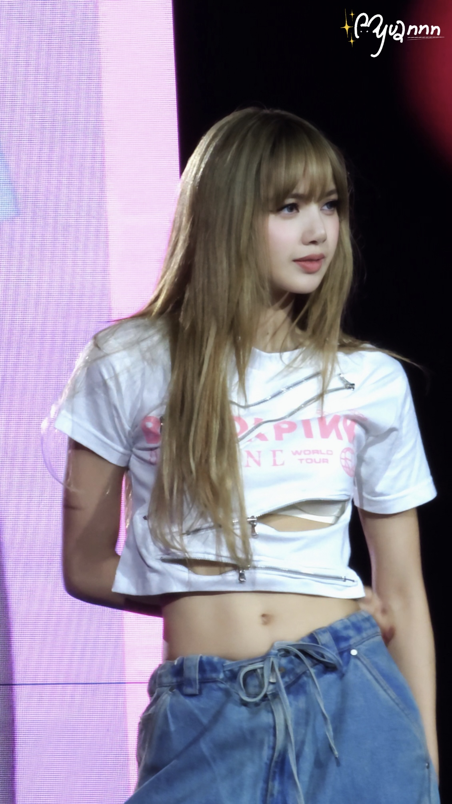
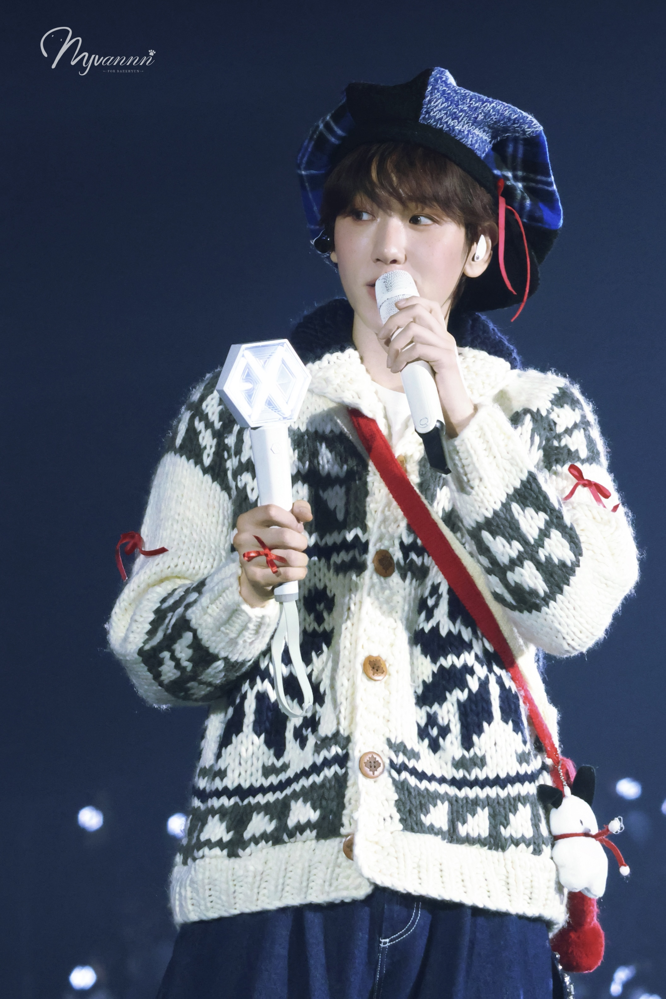
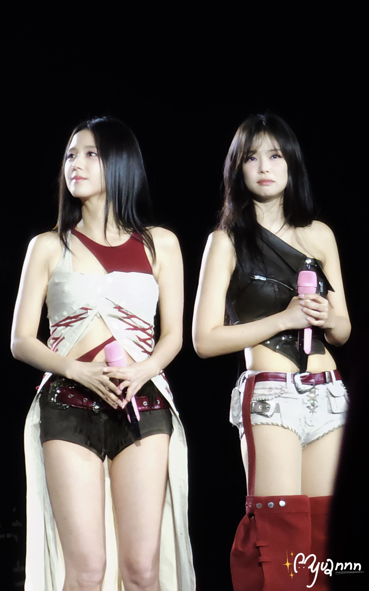
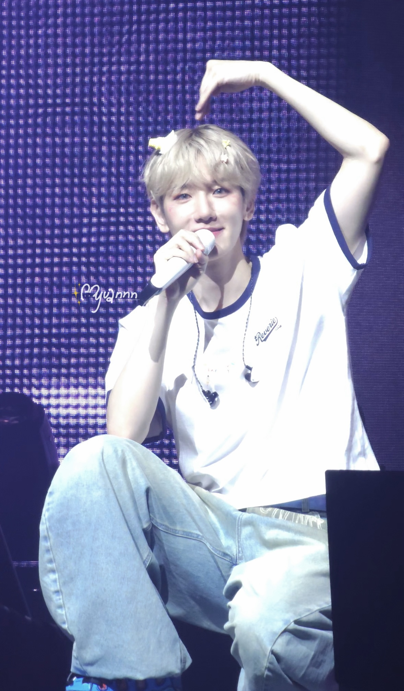
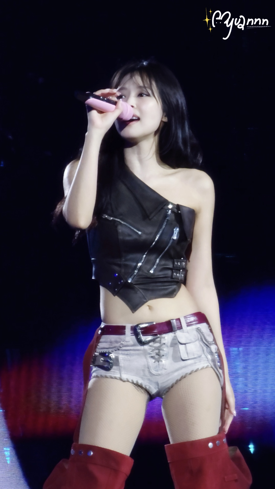
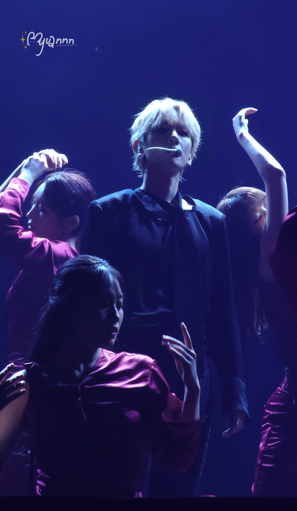
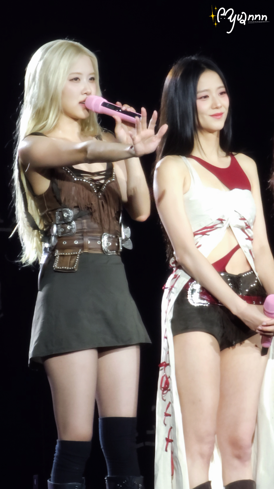

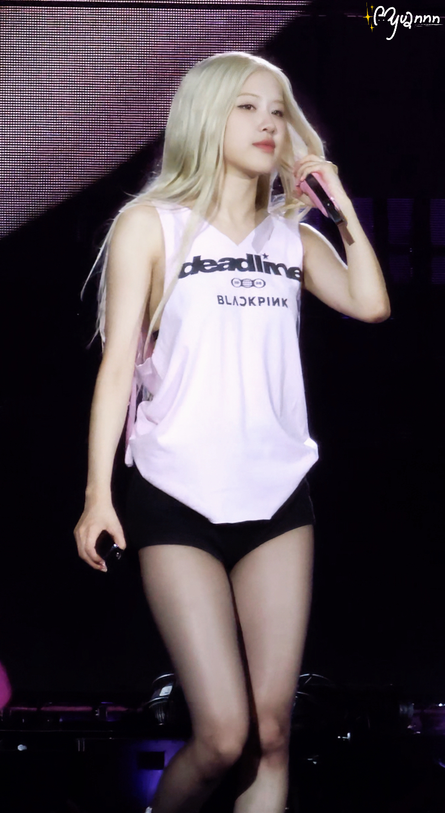

03 / PERSONAL IP CREATION
从一个角色特征出发，建立可持续生长的内容世界。
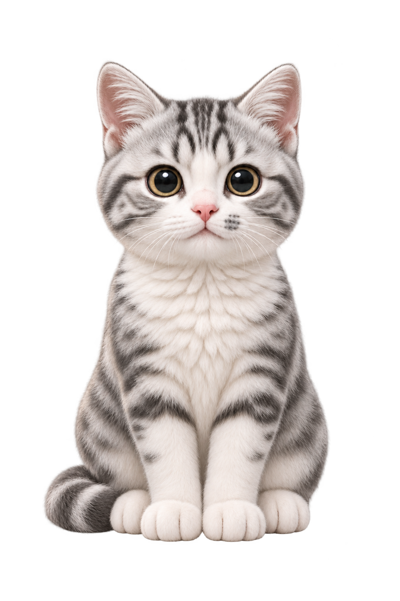
一只认真上班的小猫，
在不同职业里遇见普通人的日常。
CHARACTER BIBLE / 角色原案
银灰虎斑、白色鼻梁与嘴边小灰斑，构成“一点灰”最稳定的视觉识别。三视图与基础表情共同确保角色在不同职业和情节中保持一致。
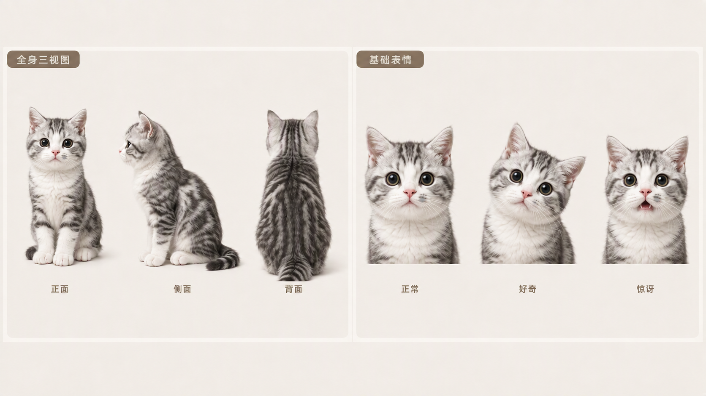
面向喜爱猫咪、轻喜剧与生活故事的年轻用户，以“职业任务＋猫咪本能＋日常温情”开发系列短视频。用具体任务和小冲突推动剧情，保持角色与视觉风格统一。
提出职业体验创意，确定“一点灰”的命名、嘴边灰斑与风格方向；通过 AI 协作推进剧本、工服、场景和静态分镜开发，主导角色特征与动作的修改。
以快递员篇完成首轮视觉开发：角色与工服设定、配送场景及泡泡情节分镜；进一步形成职业选题矩阵、故事提案和样片制作流程。
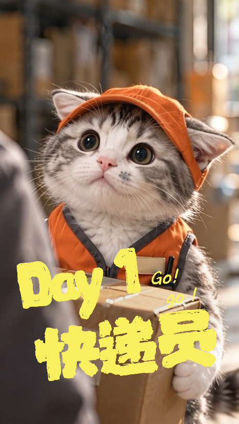
FIRST EPISODE / EP.01
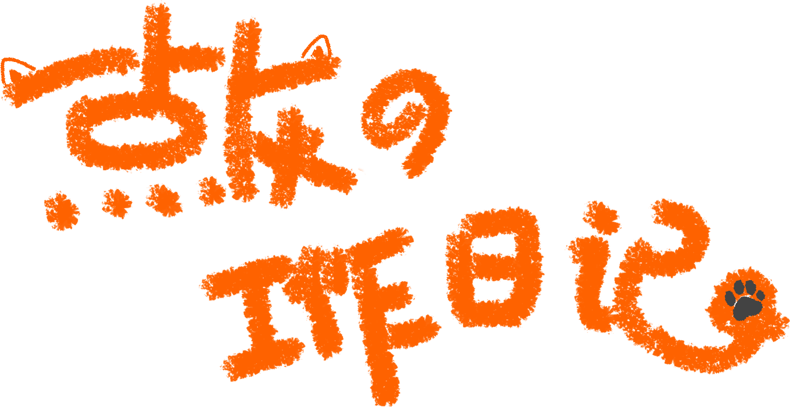
第一集从快递员职业任务出发，让角色在真实猫咪的动作逻辑中完成配送。画面以橙色工服作为系列职业识别，并用近景建立“一点灰”的首次出场。
NEW MEDIA CREATIVE · CONTENT STORYTELLING · VISUAL PRACTICE
I translate culture, stories and audience insight into visual content.
Wechat：Fufuyuan-B
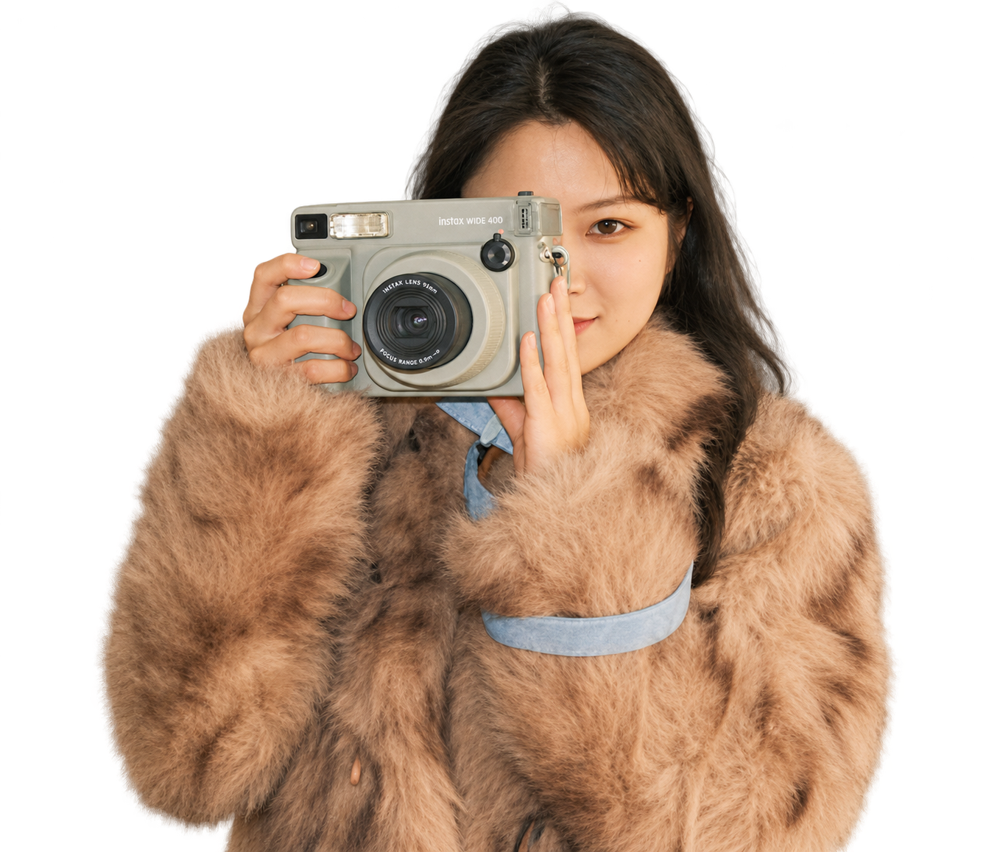
熟练使用 PR、剪映，完成 50 余条短视频剪辑制作，可适配不同平台内容节奏、风格要求。
文化创意产业管理硕士，依托跨学科知识，能够从文化视角开展宣传策划，可将品牌、文化内核转化为适配传播的可视化内容，充分了解文旅、文娱行业的内容传播逻辑。
积累政府文旅宣传、融媒体采编、自媒体全流程创作经验，覆盖活动策划、媒体对接、内容生产、账号运营、项目协作，适应多任务并行，可独立完成策划至复盘的完整工作链路。